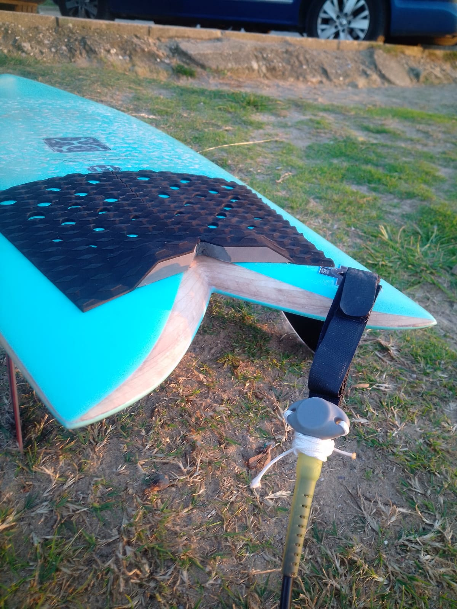

About surfclim
The ocean is warming. But coastal seawater temperature is surprisingly hard to measure: satellites struggle near the coast, and research vessels don't surf, people do.
surfclim is an initiative that monitors seawater temperature along the Cantabrian coast, one session at a time. Every time someone paddles out with an EnvLogger sensor attached to their board, they contribute a real measurement to the record. The sensor logs water temperature throughout the session; a minimum-variance algorithm then identifies the true immersion period, filtering out the moments when the board is out of the water and the sensor is exposed to air.
The observations are compared against a historical baseline: daily temperature records from Sardinero beach, Santander, spanning 1970–1978. This lets us compute anomalies and track how today's ocean compares to real observations from the past.
surfclim is an evolution of Poniendo Ojos al Mar, a citizen-science initiative based in Santander as part of ThinkinAzul. Data is updated automatically every day.
